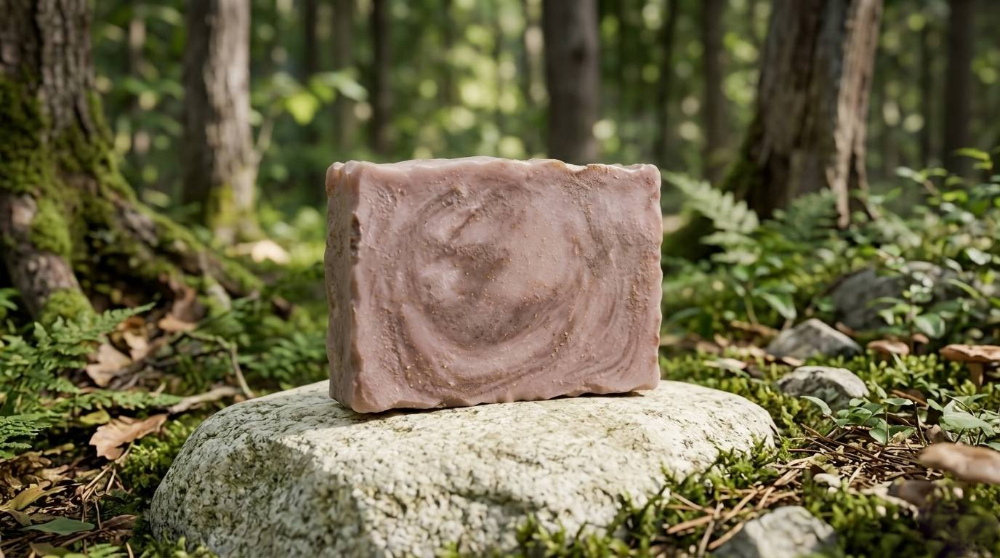

BestsellerGentle comfort for sensitive, reactive skin
The Oat & Honey Calm bar was crafted for skin that needs a little extra tenderness. Ground colloidal oats form a silky lather that wraps your skin in a protective, anti-inflammatory film — reducing redness and irritation with every wash. Raw honey, drawn from wildflower hives, seals in moisture and brings its natural antibacterial properties to the surface.
Together they create a bar that doesn't just clean — it actively nurtures. Fragrance-free and pH-balanced, it's gentle enough for daily use on faces, bodies, and even baby skin.
Colloidal oat forms a barrier that calms redness, eczema flare-ups, and dry patches.
Raw honey is a natural humectant — it draws water into the skin and holds it there.
Honey's natural peroxide content fights bacteria without stripping the skin barrier.
Oat particles softly buff away dead cells, leaving skin smooth and glowing.
Formulated to match skin's natural pH — no tightness, no disrupted microbiome.
Zero synthetic fragrance, zero parabens, zero sulfates. Nothing artificial, ever.
Splash your face or body with lukewarm water. Avoid hot water — it strips natural oils.
Work the bar between your palms or directly on skin in gentle circular motions until a rich, creamy lather forms.
Spend 30–60 seconds massaging the lather in. Let it sit for a moment — the oat actives work best with brief contact time.
Rinse with cool water to close pores and lock in the softness. Pat dry — never rub.
Rest the bar on a draining soap dish between uses. Keeping it dry between washes extends bar life significantly.
Every ingredient is chosen for a purpose. Nothing is filler.
* Sodium hydroxide is used in the saponification process. None remains in the finished bar.
This bar was designed with sensitive skin at its core, but works beautifully across all skin types.
For external use only. Avoid direct contact with eyes — rinse thoroughly with water if contact occurs. If irritation develops, discontinue use. Patch test recommended for very reactive skin. Keep out of reach of children. Store in a cool, dry place away from direct sunlight. Shelf life: 12 months from production date printed on packaging.